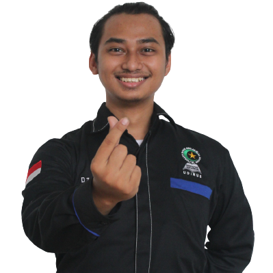

|  |
Fauzan Abiyyu Dzaky, A.Md.Kom.Jl. Tembalang Baru II No. 97(Rumah Perjuangan Ir. Soekarno)No. HP: 082242983599 | Email: fabiyudzaky@yahoo.co.id |
TentangOrganisasi merupakan satu rutintias wajib yang saya jalani semenjak SMP dengan alasan keluar dari zona dimana banyak yang menyebut sayaanti-sosial. Termotivasi untuk membuktikan bahwa organisasi tidak akan mengganggu kuliah melainkan suatu pendukung yang dapat dirasakan dalam jangka panjang. Setelah berhasil, maka diri ini sadar untuk mewujudkan hal yang lebih besar yaitu menjayakan Indonesia 2045. Pekerjaan
Pengolah Data Sistem Informasi Usaha
|
PengalamanWakil Mas’ul BAI Matholiul Anwar UDINUS (2021/2022)Wakil Presiden Mahasiswa POLINES (2018/2019)Menjalankan fungsi eksekutif tertinggi yang berada di organisasi kemahasiswaan kampus. Mewujudkannya dengan semaksimal mungkin membantu presiden mahasiswa dalam menjalankan tugasnya, serta menentukan langkah strategis dalam mensejahterakan organisasi intra kampus. Ketua Organisasi Daerah FUSIONES (2017/2018)Menjadi aktor yang membantu siswa sma di bojonegoro dan teman-teman dalam menjalani pemerantauan di semarang. Wakil Ketua 1 OSIS SMANSA (2015/2016)Memaksimalkan peran pengelolaan kegiatan luar sekolah, sebagai delegasi sekolah dan pengganti ketua dalam menjalankan fungsi eksternalnya. Selain itu juga menjalin kerjasama dengan pihak institusi tingkat kota sampai provinsi, dalam mendukung kegiatan sekolah maupun kesiswaan. Pendidikan
Fakultas Ilmu Komputer - Teknik Informatika S1 Jurusan Teknik Elektro - D3 Teknik Informatika Matematika IPA – Lintas Minat Bahasa Jepang |